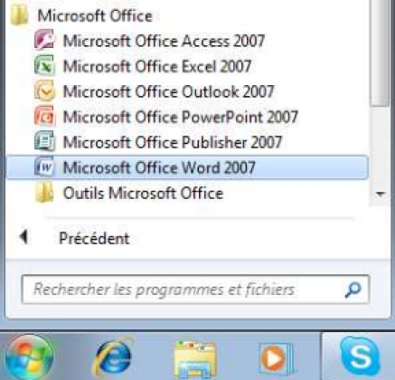

2-1-Démarrage d'un logiciel de traitement de texte (Microsoft Word 2007)
Pour démarrer Microsoft Word 2007 :
Cliquez sur le bouton démarrer puis sur Tous les programmes > Microsoft office > Microsoft office Word 2007.

Pour démarrer Microsoft Word 2007 :
Cliquez sur le bouton démarrer puis sur Tous les programmes > Microsoft office > Microsoft office Word 2007.